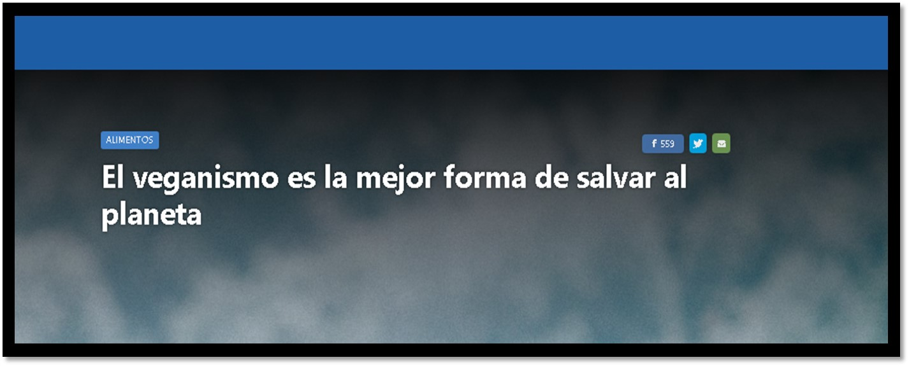
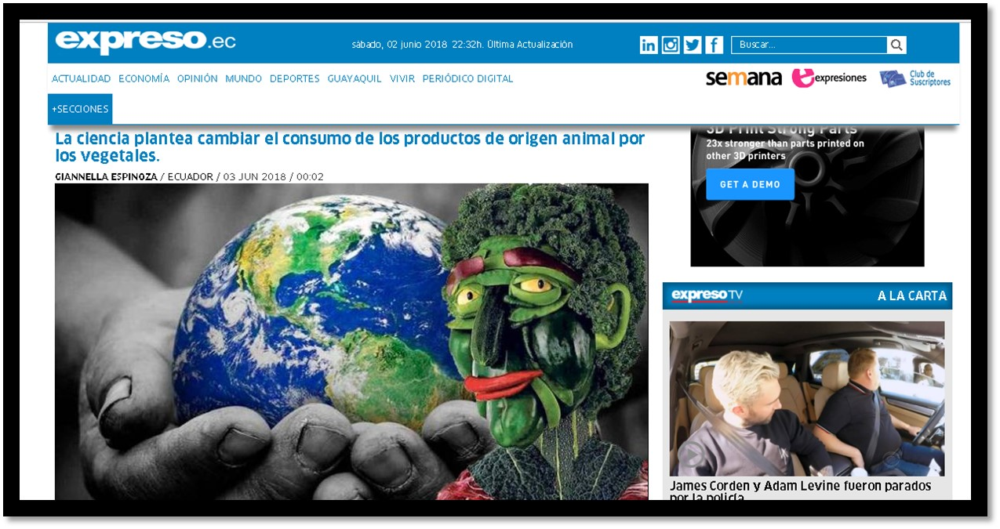
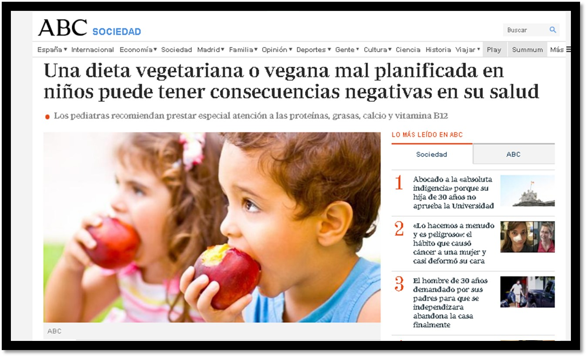

Noticias relacionadas con el veganismo
El veganismo es la mejor forma de salvar al planetaVitónica Hace ya tiempo que la ganadería está señalada como una de las principales causas del cambio climático y la destrucción de los hábitats del planeta.En un mundo en el que cada vez comemos más carne (y más de la que necesita nuestro cuerpo para estar saludable), la ganadería requiere grandes extensiones de terreno y mucha agua y energía, además de producir emisiones contaminantes y ser poco eficiente en relación con la cantidad de nutrientes que nos aporta... |
||||
| Veganismo, el camino para salvar al planeta | Más allá de una alimentación saludable, el veganismo es un estilo de vida que se basa en el respeto a los animales e implica una forma de consumo más ética, empática y sostenible. Un estilo de vida que propone optar por aquellas alternativas que prescinden del uso de animales de todos los aspectos del día a día: alimentación, vestimenta, cuidado personal, entre otros.Pero más allá del respeto por los animales, está el respeto por el planeta. Para obtener una proteína de carne de vaca se necesita mucha más tierra, más agua y emitir más contaminantes a atmósfera, suelos y aguas que para lograr una proteína de origen vegetal... |
|||
Crean el primer mapa que muestra los puntos vegetarianos y veganos de ChileCada vez es más fácil optar por una alimentación vegana. El mito que relaciona este tipo de comida con precios altos y productos poco accesibles ha ido quedando en el olvido con el paso del tiempo. Así lo demuestran decenas de locales de comida, almacenes, supermercados y emprendimientos, que ofrecen opciones veganas a lo largo del país... |
||||
Especialistas advierten sobre riesgos por dietas veganas
|
Las dietas veganas, de eliminación de gluten y de desintoxicaciónpueden ocasionar cuadros de desnutrición y problemas gástricos y diabetes a largo plazo.Especialistas del Instituto Nacional de Ciencias Médicas y Nutrición “Salvador Zubirán” advirtieron sobre los riesgos a la salud que conllevan estas medidas para bajar de peso o mejorar la salud, que falsamente escoge la población... |
|||
Una dieta vegetariana o vegana mal planificada en niños puede tener consecuencias negativas en su salud Cada vez es menos inusual que las familias, incluidos los hijos, adopten un estilo de vida vegetariano o vegano. En el primer caso, la persona se abstiene de comer carne, pescado, marisco o cualquier producto elaborado con estos alimentos, pudiendo o no incluir en su dieta alimentos derivados de otros animales como huevos, lácteos o miel. En el caso de los veganos, son más estrictos y no comen ningún alimento o derivado de origen animal. Y esta manera de alimentarse, si está mal planteada, puede tener consecuencias negativas en la salud e influir en el crecimiento de los niños y adolescentes... |
||||